Journey timeline and 3D buttons: review captures
19 Oct 2026 · local dev server (localhost:3011), not deployed. Website captures: Chrome via Playwright. Click any image for full size.
1 · Complete section, desktop (1440 px)


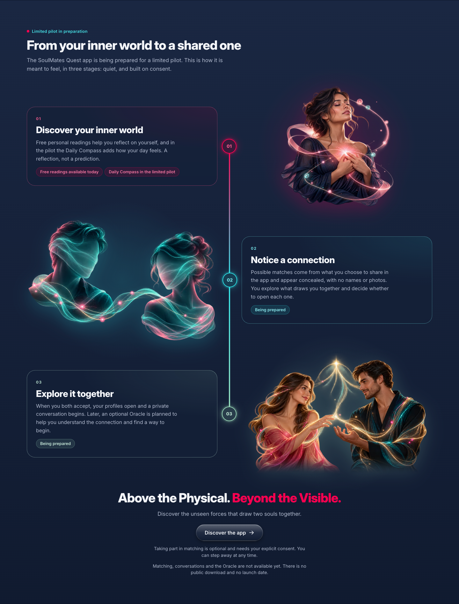

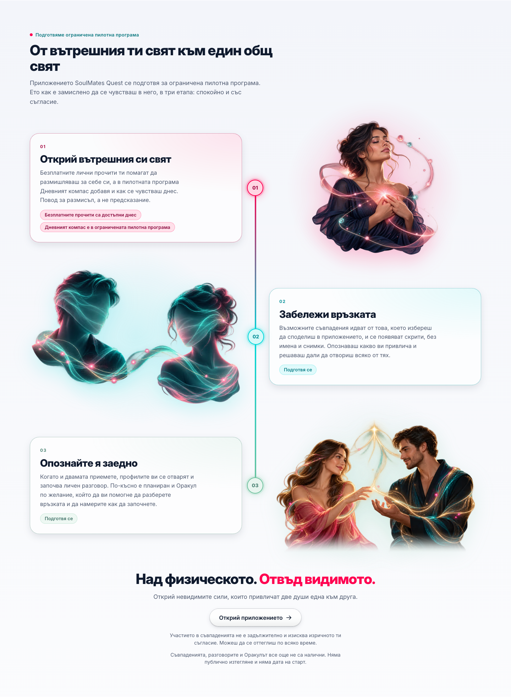

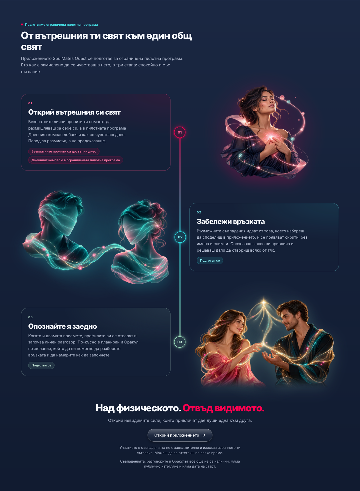
2 · Complete section, mobile (390 px)

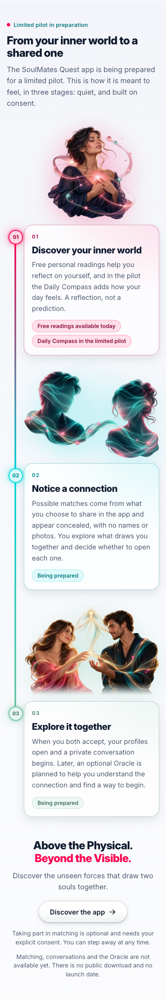

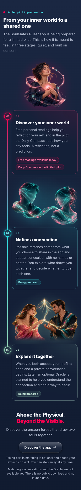

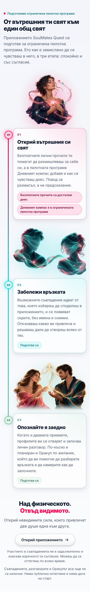

3 · Reduced motion, no JavaScript, large text


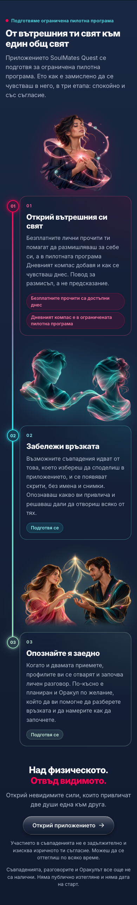

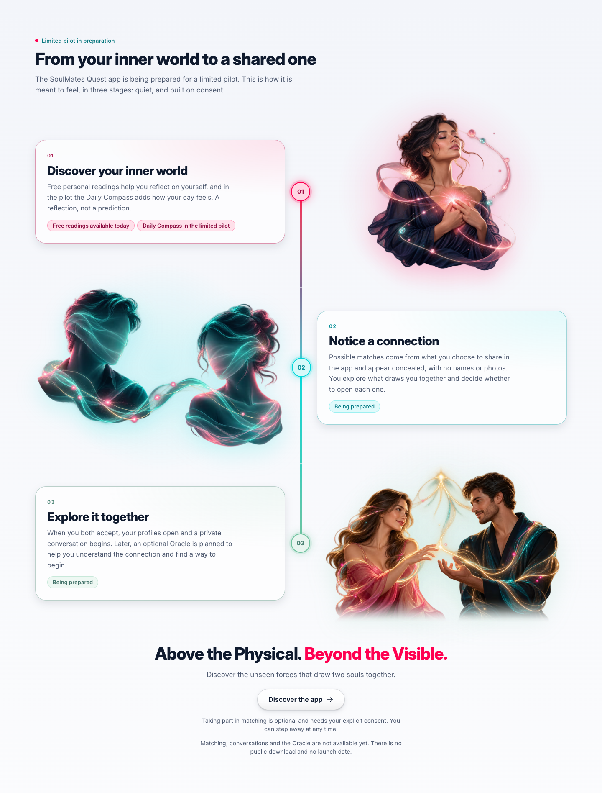

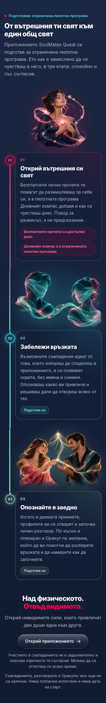

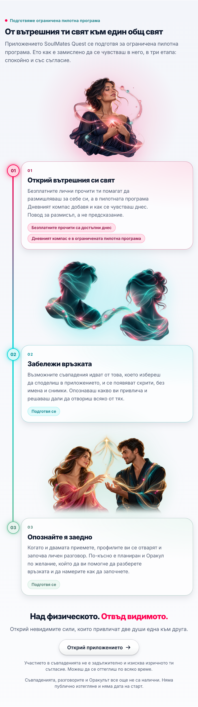

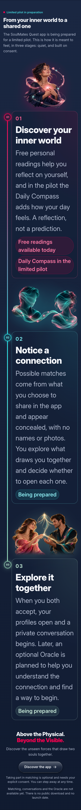
4 · Rail geometry (measured)
Distance from each end of the rail to the centre of the first and last node, in CSS px. Before the fix the no-JavaScript rail overshot by about 167 px (top) and 179 px (bottom).
| Run | Rail | Top | Bottom | Horizontal overflow |
|---|---|---|---|---|
| EN/BG · light/dark · desktop | measured | −1 | −1 | 0 |
| EN/BG · light/dark · mobile | measured | −0.6 | −0.4 to −0.6 | 0 |
| Reduced motion (desktop, mobile) | measured | −1 / −0.6 | −1 / −0.4 | 0 |
| No JavaScript · desktop | CSS segments | 0 | 0 | 0 |
| No JavaScript · mobile | CSS segments | −1 | −1 | 0 |
| 200% zoom · doubled text | measured | −0.6 | −0.2 / −0.9 | 0 |
5 · Website buttons: rest, hover, press, focus
Hero pair (raspberry primary + glass secondary) and the journey CTA (glass). Captured at 2×.
EN · light · desktop


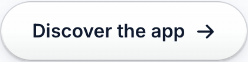

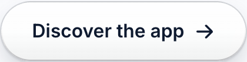


EN · light · mobile

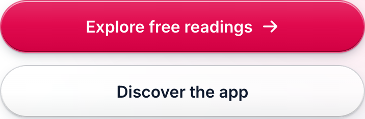

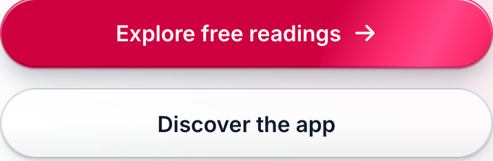

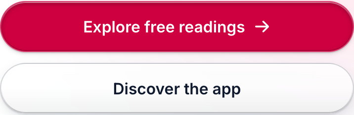

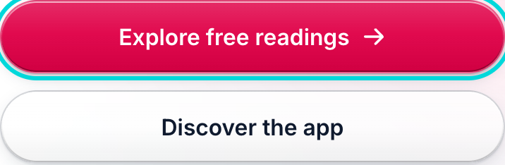

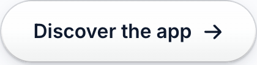

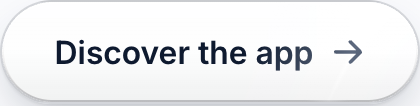

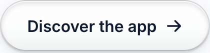

EN · dark · desktop


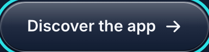
EN · dark · mobile

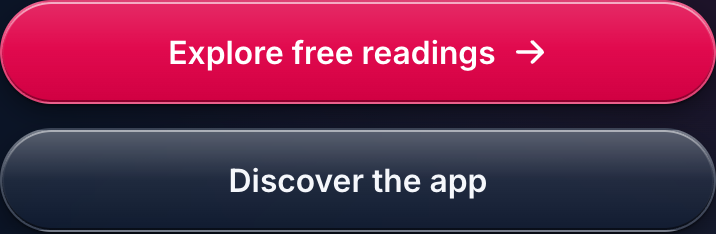

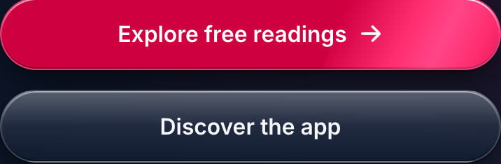

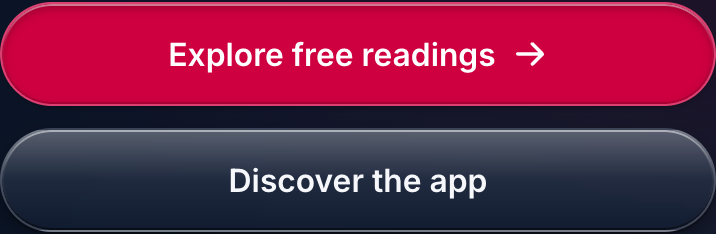

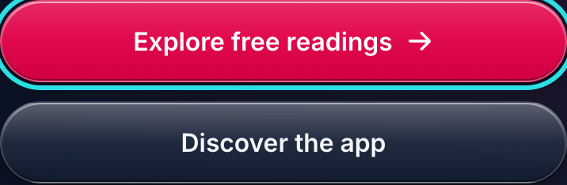


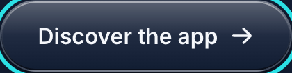
BG · light · desktop

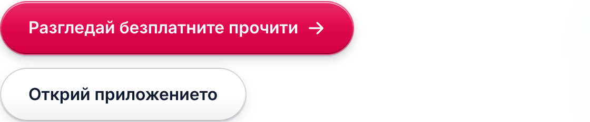

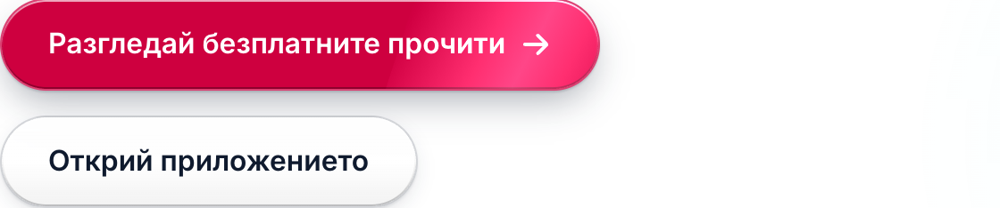

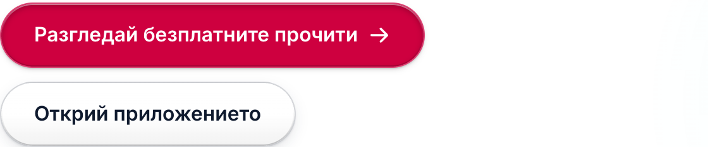

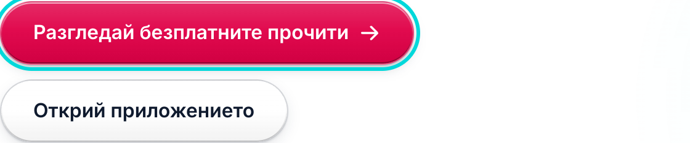

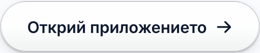

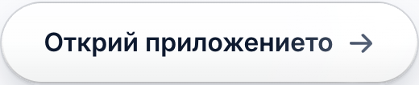

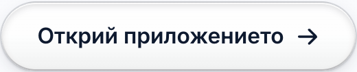

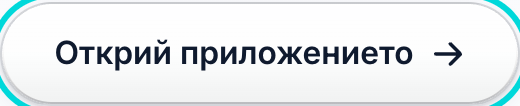
BG · light · mobile

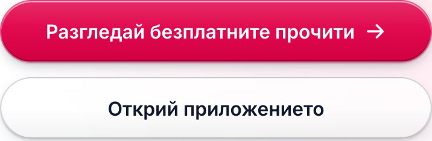

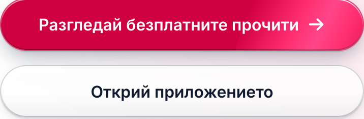

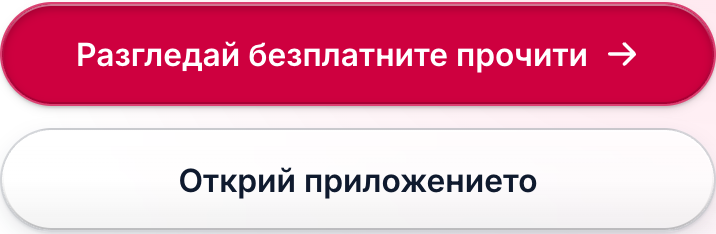

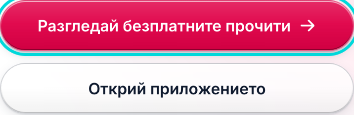

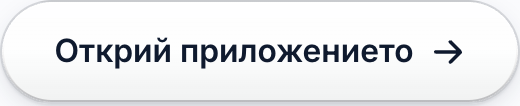

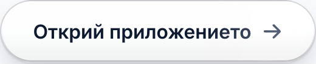

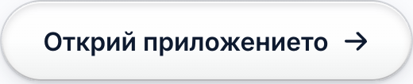

BG · dark · desktop


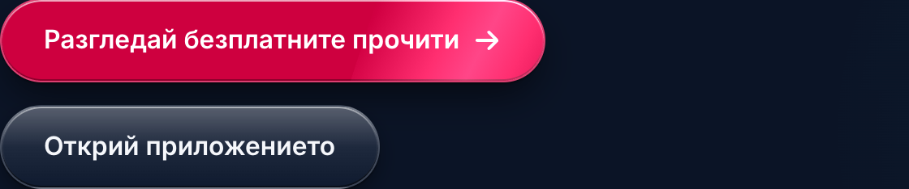

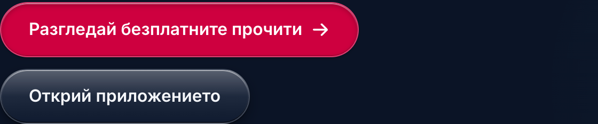

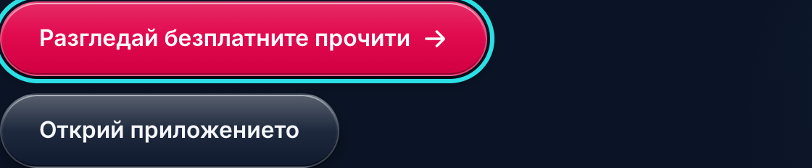

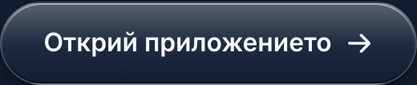

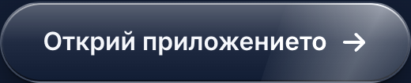

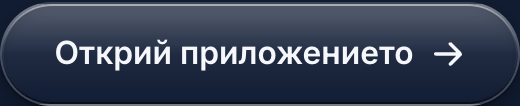

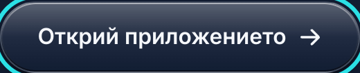
BG · dark · mobile

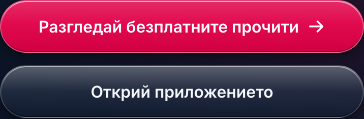

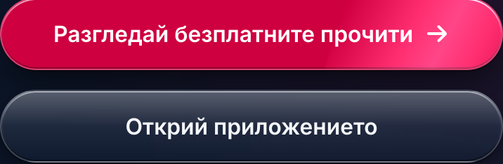


6 · App: native depth button on emulator-5570 (Android, BG)
Dev client against the local backend. The account has no open match, so a temporary, uncommitted edit put depth on the Matches tab’s primary button and added a teal “Open conversation” sample beneath it; it was reverted after capture. Pressed captures hold the finger down without releasing. Device settings were restored afterwards (font scale 1.0, animations on, light).
Light


Dark


Reduced motion (animations off), light


Font scale 2.0, light


Font scale 2.0, dark